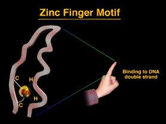
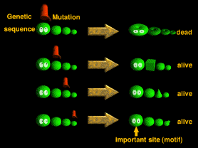
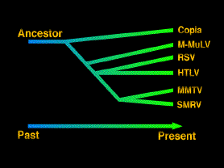
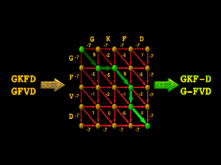
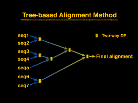
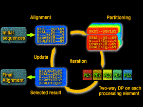
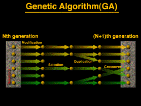
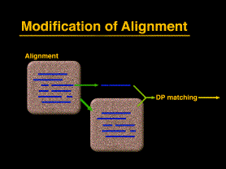
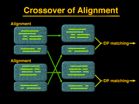

| 遺伝子情報処理 Home Page |
| 遺伝子同定 |
| 配列解析 |
| アライメント |
 |
タンパク質／核酸のアライメント解析 |
[目次]
1. アライメントとは何か？
アミノ酸／塩基配列の類似性解析の中でも基本的なもののひとつは、複数の配列の類似する部分を縦に揃えて並べ合わせる操作で、これをマルチプルアライメント(Multiple Alignment)と呼びます。
まず、具体的な例を示しましょう。
図(a)にはアミノ酸配列が6本示されています。これらはレトロウイルス(retro-virus)がもつタンパク質の一部分です。各配列の左側にある見出しは、それぞれのタンパク質を産出したウイルスの名前を示しています。たとえば、HTLVはヒトT細胞白血病ウイルスのことで、AIDSウイルスに非常に近い仲間です。
copia :ILDFHEKLLHPGIQKTTKLFGETYYFPNSQLLIQNIINECSICNLAK
MMULV:LLDFLLHQLTHLSFSKMKALLERSHSPYYMLNRDRTLKNITETCKACAQVN
HTLV :LQLSPAELHSFTHCGQTALTLQGATTTEASNILRSCHACRGGN
RSV :YPLREAKDLHTALHIGPRALSKACNISMQQAREVVQTCPHCNSA
MMTV :IHEATQAHTLHHLNAHTLRLLYKITREQARDIVKACKQCVVAT
SMRV :LESAQESHALHHQNAAALRFQFHITREQAREIVKLCPNCPDWGS
(a) アライメントする前の配列
copia :IL-DF----HEKLLHPGIQKTTK-LF--GET-YY-FPNSQLLIQNIINECSICNL-AK
M-MULV:LL-DFL--LHQ-LTHLSFSKM-KALLERSHSPYYMLNRDRTL-KNITETCKACAQ-VN
HTLV :LQLSPA-ELHS-FTHCGQTAL-T-LQ--------GATTTEA--SNILRSCHACRG-GN
RSV :YPLREAKDLHT-ALHIGPRAL-S-KA-------CNISMQQA--REVVQTCPHC-N-SA
MMTV :IH-EAT-QAHT-LHHLNAHTL-R-LL-------YKITREQA--RDIVKACKQCVV-AT
SMRV :LE-SAQ-ESHA-LHHQNAAAL-R-FQ-------FHITREQA--REIVKLCPNCPDWGS
^....^ ^..^
(b) アライメント結果
図(b)には (a)をアライメントした結果が示してあります。同じアミノ酸や性質の似たアミノ酸が縦に同じカラム位置になるように、ところどころハイフンが挿入されています。このハイフンをギャップ(gap)とよびます。
縦方向に揃った代表的文字で構成される配列を、そのアライメントのコンセンサス配列(consensus sequence)とよびます。図(b)ではHで示されるヒスチジン(histidine)が2個と、Cで示されるシステイン(cysteine)が2個が縦に揃っており、コンセンサス配列とみることができます。
また、コンセンサス配列のなかに見られるパターンが、アライメントされた配列群を特徴づけるものと判断できるとき、そのパターンを、配列モチーフ(sequencemotif)とか、単にモチーフと呼びます。
Cが2個とHが2個で特徴づけられるパターンは、「亜鉛の指」(ジンクフィンガー,zinc finger)と呼ばれる有名なモチーフです。

図はタンパク質のうちジンクフィンガー部分に相当する立体構造を示しています。Cが2個とHが2個で亜鉛イオンに結合することで、「指」に相当する構造が形成され、DNAの2重らせんの溝に、それらの「指」が入り込むことで、特定のDNA配列を認識・結合するという機能があります。図(b)でアライメントにより抽出されたパターンは、ジンクフィンガーのモチーフである可能性が高いといえます。

アライメントのうち比較的類似したアミノ酸が縦に並んでおり、ギャップの入り方も少ない領域を、保存部位(conservative site)といいます。図(b)では、2個の Hの周辺、2個の Cの周辺は保存性が高いのに対して、その間の配列中央部は大きなギャップが入っており保存性が低くなっています。保存性の高い部位は、配列のなかでもタンパク質の構造や機能の実現のうえで重要な部分であると推測できます。
重要な配列部分は進化の過程のなかで保存されるので、生き残っている生物の同種のタンパク質をアライメントで調べると、保存部位を発見することができます。
目次に戻る
2. アライメントの利用目的
アライメントのうち、対象とする配列の数が2本のものをペアワイズアライメント(pairwise alignment)と呼び、3本以上のものをマルチプルアライメント(multiple alignment)と呼んで区別をしています。
ここでは、これらのアライメントが主にどんなことに使用されているかを解説します。
2.1.ペアワイズアライメント
ペアワイズアライメントは、基本的に配列と配列との類似性の度合を求めることに使われます。
そこで、ペアワイズアライメントは以下の目的に使用されています。
- マルチプルアライメントの始めの段階で、どの配列とどの配列が似かよっているかの判断
- 配列データベースから類似の配列を検索する手段
たとえば、ペアワイズアライメントの手法を利用した高速配列検索ツールに FASTAがあります。
2.2.マルチプルアライメント
マルチプルアライメントは一度に複数本を比較するので、配列に存在するノイズの影響をあまり受けることなく、ペアワイズアライメントに比べて、より効果的に配列の共通性を見い出すことができます。
マルチプルアライメント利用目的には、以下のものがあります。
- モチーフの抽出
前項のアライメントからジンクフィンガーモチーフを抽出する例のように、すでに判明しているモチーフを同定する場合の他に、新たなモチーフを発見する場合があります。
新たなモチーフの発見には、単にアライメントのコンセンサスに見られたパターンというだけでは不十分で、生物学的な意味もあることが必要と考えられています。 - 構造/機能の予測。
アライメントされた配列群のなかに配列の構造/機能がわかっているものがあれば、それとよくアライメントされる他の配列にも、同様な構造/機能があると推測できます。図(b)の最初の配列 copia は、ショウジョウバエのDNAから見つかった配列をアミノ酸配列に翻訳したものですが、他のウイルスのタンパク質のアミノ酸配列とよくアライメントできています。他のウイルスのタンパク質はエンドヌレアーゼという酵素のものなので、このショウジョウバエのタンパク質も類似した活性をもつのではないかと推測することができます。 - 進化系統樹の解析。

マルチプルアライメントの結果から、分子進化の過程でどのような突然変異が起きたかを推定し、図のような系統樹を描くことができます。
系統樹は過去から現在へ配列がどのような順で変化してきたか、生物種がどのように分化してきたかの歴史を示すものです。
図のようなウイルスの系統樹からは、類縁のウイルスには同様な薬剤が効くなどの、医学的な検討にも役立てることができます。
目次に戻る
3. 従来のアライメント解析技術
ここでは、従来の解析技術について解説します。3.1.ペアワイズアライメント
アミノ酸の類似性とギャップの入りにくさに対して生物学的・物理学的視点からスコアを割り当て、アライメント全体の評価値を定義すると、配列2本(ペアワイズ)のアライメントは、アライメント全体の評価値を最適化するようなマッチング(global matching)問題とみることができます。この問題は、ダイナミックプログラミング(以下DP)の技術で解くことができます。
DPは、最適化問題の解法として古くから知られていた技術で、生物の配列マッチングに応用されたのも古く、1970年には最初の試みが行なわれています。

図のように、GKFD, GFVDという2つの短い配列をアライメントする場合、この2つの配列を図のような2次元のネットワークの辺に対応させます。斜め方向のアーク(矢)は、そのアークの位置に対応する2つのアミノ酸の類似度が割り振られます。アミノ酸の類似度には、Dayhoffマトリックス(PAM250)が一般的に用いられています。この尺度は、進化の過程で該当アミノ酸間での置換がどの程度起こりやすいかを推定し、数値化したものです。
また、縦および横方向のアークは、ギャップに対応し、ギャップを挿入するときのコストが割り振られます。
この場合、最適なアライメントを求めることは、このネットワーク上の最良の経路を求めることに対応します。たとえば、太いアークで表された経路が最良になった場合、この太いアークで表された経路を順に見ていくと、Gと Gが対応し、Kに対応するもう片方のアミノ酸はなく(ギャップが対応)、Fには Fが対応し、という具合に解釈することができます。結果として図の右側にあるアライメントが得られます。
スコアが最良の経路は、左上の端から右下の端に向かって、各ノードに至る最良経路を段階的に決定していくことにより求めることができます。各ノードの計算を行うためには、直前の段階の各ノードで求めた、左上端からそこまでの最良経路の評価値を参照して、今求めたいノードに至る評価値をそれぞれ計算します。そして、それらの最良値を求めて、それをそのノードまでの評価値とします。この操作を右下のノードまで繰返すと、最後にネットワーク全体の最良経路を求めることができます。
3.2.マルチプルアライメント
DPを多次元化することで、複数配列のマルチプルアライメントを行うことが、原理的には可能になります。たとえば、配列3本のアライメントには、3次元DPの処理を行うことになります。
しかし、n本の配列を同時にアライメントするn次元のDPは、概して配列のn乗の計算量とn乗のメモリー量が必要になり、現実的に可能なのは3次元までです。
3.2.1.単純組合せ法
単純な組合せ法は配列1と配列2、配列2と配列3、という具合に配列を2本ずつペアワイズにアライメントし、その結果を次々と組合せてマルチプルアライメントを作る方法です。ペアワイズのアライメントには、通常ダイナミックプログラミングが用いられます。しかし、この方法で得られるアライメントの品質はあまり良いものではありません。一番大きな問題は、一緒に比較していない配列同士の類似部分が、組合せたときにズレてしまうことです。処理する配列群の類似性が低いときには、特にこの現象が顕著になります。
これを防ぐには2つのアプローチがああります。ひとつは、一度に比較する配列を増やすこと、もうひとつはより類似した配列から順に組合せることです。
3.2.2.逐次組合せ法
逐次組合せ法は4本の配列(seq1,seq2, seq3, seq4)のアライメントを行うとき、次の手順で処理をします。
- seq1とseq2をペアワイズDPにてアライメント
- その結果とseq3とをグループ間のDPにてアライメント
- さらにその結果とseq4とを再びグループ間DPにてアライメント
- 4本のマルチプルアライメントが得られる
3.2.3.グループ間DPによるアライメント
グループ間のDPとは、配列群Aと配列群Bとを、配列群内の各々のアライメントはくずさずに、2次元のDPをするものです。グループ間DPを行うときには、各アークに割当てられるアミノ酸の類似度が、そのアークの位置に対応する配列群Aのアミノ酸と、配列群Bのアミノ酸との類似度の総和になります。配列群Aが2本で、配列群Bが3本のときは、6通りのアミノ酸対に関する類似度の和をとることになります。類似度にはペアワイズDPと同様に、Dayhoffマトリックスを使用します。
3.2.4.ツリーベース組合せ法

ツリーベース組合せ法は、配列間の類似性に従って描かれたツリー状の階層関係に基づいて、類似性の高い配列から順にマルチプルアライメントを形成していく手法です。類似した配列から順に組合せれば、組合せ法によって得られるアライメントの精度を大きく改善することができます。類似した配列同士のアライメントは確実で、信頼性が高いからです。
配列間の類似性に従ってツリーを描き、ツリーの枝先から幹に向かって、枝が合わさる部分ごとに、ふたつの枝に相当するふたつの配列群をDPして、マルチプルアライメントを作っていきます。そうすると最後には、全体のアライメントが得られます。
その際に、ペアワイズDPだけを行う方法と、グループ間DPを使う方法とがあります。
ペアワイズDPだけを行う代表的な方法には、Doolittleらの、Progressive Alignmentがあり、グループ間DPを使う代表的なツールには、CLUSTAL W 等があります。
3.2.5.反復改善法
反復改善法は、グループ間DPを反復的に適用することによりアライメントを徐々に改善する方法です。
- 何らかの方法で初期状態となるアライメントを作成。
一番簡単な方法としては、すべての配列を左詰めにして、右の方の必要な場所にギャップを埋めるなど。 - これらの配列を、 ランダムに2つのグループに分割。
- 分割された2つのグループ間に、DPを適用。
- 改善が見られた場合は、改善された状態を、新しい初期状態としてグループ間DPを適用。
- この過程を1サイクルとして繰り返すことにより、徐々にアライメントを改善していく。
- 評価値に収束がみられたら、その時点の状態を最終アライメントとする。
目次に戻る
4.並列計算機の応用
前節で紹介した反復改善法は強力な方法ですが、いくつかの問題点があります。
第1は解の質の問題です。反復改善法では評価値がだんだんと改善されますが、どの程度の解に至るかは、配列をランダムに分けるのに使用する乱数や、初期状態に大きく左右されます。
第2は実行時間の問題です。反復改善法で処理する配列の本数が多いと、グループ間DPを行う時間が軽視できないうえに、ほとんどの分割が改善に寄与しないので、収束までのサイクル数も大きなものとなります。
4.1.最良探索反復改善法
グループ間DPを繰返すと、マルチプルアライメントの評価値が初期状態から次第に良くなっていきますが、どこまでも単調に良くなるわけではありません。乱数の与え方によりアライメントが不適当な方向へ進むと、比較的悪い局所最適値(local optima)に陥ってしまい、それ以上もはや改善されない状態になります。最良探索(best-first search)を用いると、安定して比較的良い解を求めることができます。
最良探索では、ランダムにひとつの分割を決めてDPするのではなく、すべての分割についてグループ間DPを試みます。

- 初期アライメントの配列群をすべての可能な組合せの2組のサブアライメントに分割。
- 各々のサブアライメント同士のグループ間DPを各プロセッサで並列に行なう。
- その結果のうち最良のスコアのものを次のサイクルの初期アライメントにする。
- スコアに改善が見られなくなったらその時点のアライメントを最終解とする。
4.2.ツリーベース反復改善法
ツリーベース反復改善法は、ツリーベース組合せ法と同様に始めにツリーを作成し、そのツリーに従ってグループ間DPで配列を次々とアライメントしていきますが、配列群をアライメントしたのちには必ず、上記の並列反復改善法を適用します。
4.3.遺伝的アルゴリズム(GA)を用いるアライメント

遺伝的アルゴリズムは図に示すように、多くの「個体」からなる集団が世代交代を繰り返すことで、「個体」の平均「適応率」をあげようとするものです 。「個体」を組合せ問題の解、「適応率」を解の評価値に対応させることで、組合せ最適化問題に応用することができます。
では、このGAをマルチプルアライメントに応用してみましょう。「個体」に暫定的なマルチプルアライメントを、「適応率」にそのアライメントの評価値を対応させます。 そして、突然変異、クロスオーバー、淘汰、繁殖を次のように適用します。
| 突然変異 | マルチプルアライメントからランダムに1本を抜きだし、残りとグループ間DPをします。これは反復改善法の1サイクルに相当します(Modification of Alignment)。 |
|---|---|
| クロスオーバー | 集団のなかから比較的評価値の良いアライメントふたつを選びだし、 それぞれの配列群をランダムにふたつの配列グループに分けます。 それらの片側の配列グループを交換し、グループ間DPで融合します。これにより、アライメントのなかに、比較的良く揃っている部分があれば、他のアライメントのなかにある別な良く揃っている部分と、互いに融合され、ひときわ高い評価のマルチプルアライメントができる可能性が生まれます(Crossover of Alignment)。 |
| 淘汰 | 集団のなかから比較的低い評価値のアライメントを捨てます。 |
| 繁殖 | 淘汰によって残った集団からランダムに選んだ個体をコピーします。 |


このような操作の設定によりかなり特徴の異なる探索を実現することができます。
ICOTでは、GAを用いたアライメントを並列計算機に実装しました。
一つのプロセッサ(PE)をマスタープロセッサとして全体の包括処理を割り当て、他のPEはスレーブとして各個体群(アライメント状態の解)を割り当てます。マスタープロセッサは集団間の移民・消滅処理などを行ない、各スレーブは群内の変異処理などを行ないます。
そして、実行の経過にともなって設定を変更していくことによって性能の良い並列探索を実現することができます。
目次に戻る
5.アライメントワークベンチ
反復改善法では、マルチプルアライメントに与える評価値の体系は変えずに、とにかくその体系のもとで最も点数の高い結果を得ることを主眼としていました。しかし、系統樹解析の観点からすると、評価値体系は配列の系統関係の推定により変わり得るものであり、また、立体構造解析の観点からみて良いアライメントは、系統樹解析の観点からみて良いアライメントとは必ずしも一致しないという議論もあります。
生物学者がアライメントの結果を研究者の観点から簡単に修正できる編集ツール=ワークベンチが必要とされてきています。
ユーザーのインタラクティブな操作で、並列計算機を使いながらマルチプルアライメントの問題を解くワークベンチを、ICOTでは、開発・提供しています。
このワークベンチでは、マルチプルアライメントを行っている途中の部分配列を指定し、指定部分のみのアライメントを並列計算機で高速に行う機能があります。また、指定のアミノ酸を揃えるという制約を課したうえでの、アライメント実行も可能になっています。
その他、アライメント結果についてモチーフ抽出と系統樹解析を行なうことができます。
いずれの操作も、マウスでクリックすることで簡単に実行することができ、使いやすいものになっていることも特徴の一つです。
このワークベンチは、上記のアライメントプログラムとともにIFSとして公開されています。
また、アライメントワークベンチ上でのマルチプルアライメントのデモをこちらで見ることができます。